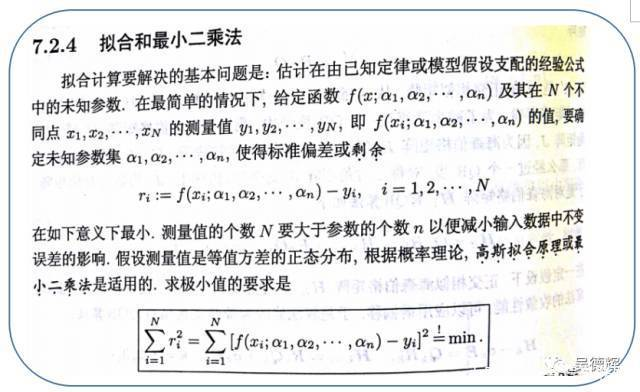

摘要
本篇文章笔记总结来自网络和书本，引用部分都有来源，内容主要介绍线性回归相关基础相关实际应用搞得入门例子，很简单，但是能说明线性回归相关基础的原理相关。
- [x] Edit By Porter, 积水成渊,蛟龙生焉。
文章同步于: 我的gitbook
LinearRegression算法
一、最小二乘法的拟合原理

最小二乘法定义如上图所示，但是初看可能会有点懵，上面的表示是啥意思，好接下来总结下我的理解
最小二乘法（又称最小平方法）是一种数学优化技术，除了能拟合直线还能拟合曲线问题。
书中截取部分如果可以这样理解$$\alpha{i}$$，如果是二次项的话$$y=\alpha{1} x^{2}+\alpha{2} x + \alpha{3} $$，知道了吧，就是一个二项式子中的待解参数。
本文为了推导和笔记的简单化，直接以拟合直线 $$f(x;a,b): y=ax+b$$
1.1 代数推导：
- [1]. 假设拟合直线 $$f(x;a,b): y=ax+b$$
- [2]. 已经由n个样本$$(x{n}, y{n})$$
- [3]. 误差$$e{i}=y{i}-(ax_{i}+b)$$
- [4]. 当$$S = \sum{i=1}^{n} e{i}^{2}$$为最小值时，即得到的a,b参数就是最小二乘法得到的解.
如何求解这些参数（a，b）
$$\frac{\partial S}{\partial b}=-2(\sum{i=1}^{n}y{i}-nb-a\sum{i=1}^{n}x{i})$$
$$\frac{\partial S}{\partial a}=-2(\sum{i=1}^{n}x{i}y{i}-b\sum{i=1}{n}x{i}-a\sum{i=1}^{n}x_{i}^{2})$$
分别令上式中对a,b求偏导数的有点等于0,以此求取对a,b的最值.有：$$n\bar x=\sum{i=1}^{n}x_i,n\bar y=\sum{i=1}^{n}y_i$$
得到：
$$a=\frac {\sum{i=1}^{n}({x_i-\bar x})(y_i-\bar y)} {\sum{i=1}^{n}({x_i-\bar x})^2}$$
$$b=\bar y-a\bar x$$
$$a=\frac {n\sum{}^{}{x_iy_i}-\sum{}^{}{xi}\sum{}^{}{yi}} {n\sum{}^{}{xi}^2-(\sum{}^{}{x_i})^2}$$
$$b=\frac {\sum{}^{}{x_i}^2\sum{}^{}{yi}-\sum{}^{}{xi}\sum{}^{}{xiy_i}} {n\sum{}^{}{xi}^2-(\sum{}^{}{x_i})^2}$$
1.1.1 代数推导的代码实现
import numpy as np
import matplotlib.pyplot as plt
def calcAB(x,y):
n = len(x)
sumX,sumY,sumXY,sumXX =0,0,0,0
for i in range(0,n):
sumX += x[i]
sumY += y[i]
sumXX += x[i]*x[i]
sumXY += x[i]*y[i]
a = (n*sumXY -sumX*sumY)/(n*sumXX -sumX*sumX)
b = (sumXX*sumY - sumX*sumXY)/(n*sumXX-sumX*sumX)
return a,b,
xi = [1,2,3,4,5,6,7,8,9,10]
yi = [10,11.5,12,13,14.5,15.5,16.8,17.3,18,18.7]
a,b=calcAB(xi,yi)
print("y = %10.5fx + %10.5f" %(a,b))
x = np.linspace(0,10)
y = a * x + b
plt.plot(x,y)
plt.scatter(xi,yi)
plt.show()
1.2 矩阵推导
对于$$y=ax+b$$,转为向量的形式为
$$ W=\begin{bmatrix} w_0\ w_1 \end{bmatrix},X=\begin{bmatrix} 1\ x_1 \end{bmatrix}
$$
于是：
$$y=w_1x_1+w_0=W^TX$$
损失函数为:
$$ L=\frac{1}{n}\sum_{i=1}^{n}(y_n-(W^TX)^2)=\frac{1}{n}(y-XW)^T(y-XW)
$$
最后可化为
$$\frac{1}{n}X^TW^TXW-\frac{2}{n}X^TW^Ty+\frac{1}{n}y^Ty$$
令偏导为0
$$\frac{\partial L}{\partial W}=\frac{2}{n}X^TXW-\frac{2}{n}X^Ty=0$$
另外：
$$(X^TX)^{-1}X^TX=E,EW=W$$,则
$$(X^TX)^{-1}X^TXW=(X^TX)^{-1}X^Ty,W=(X^TX)^{-1}X^Ty$$
1.2.1 代码实现：
import numpy as np
import matplotlib.pyplot as plt
x = [1,2,3,4,5,6,7,8,9,10]
y = [10,11.5,12,13,14.5,15.5,16.8,17.3,18,18.7]
A = np.vstack([x,np.ones(len(x))]).T
a,b = np.linalg.lstsq(A,y)[0]
print("y = %10.5fx + %10.5f" %(a,b))
x = np.array(x)
y = np.array(y)
plt.plot(x,y,'o',label='data',markersize=10)
plt.plot(x,a*x+b,'r',label='line')
plt.show()
拟合的效果（蓝线）

1.3 小结

二、线性回归
线性回归的目的是找到一个与这些数据最为温和的线性函数，用来预测或者分类，主要解决线性问题。 一般来说，线性回归问题都可以通过最小二乘法来求出方程。线性回归属于监督学习,因此方法和监督学习应该一样，先给一个训练集，根据这个训练集学习出一个线性函数，然后测试这个函数训练的好不好（拟合是否恰当）。Cost Function 越小的函数，说明训练数据拟合程度越好。
- 线性回归，通过数据集的线性组合来预测函数：
$$f(x)=\omega{1}x{1}+\omega{2}x{2}+\omega{3}x{3}+...+\omega{d}x{d}+b$$
一般向量形式写为：
$$f(x)=\omega^{T}x+b$$
其中的$$\omega=(\omega{1};\omega{2};\omega{2};...\omega{d})$$
$$x{1},x{2},...x_{k}$$是一组独立的预测变量
$$\omega{1},\omega{2},...\omega_{k}$$为模型从训练数据中学习得到的参数，或称赋予每个变量的权值。
b是一个学习到的参数，这个现行函数中的常量也称模型的偏置（Bias）
- 根据输入属性可分为一元，二元......多元线性回归。
多元数据集的定义如下：
$$D=\left [ x{i,j}, y{i}\right ]$$，其中i,表示数据集第i位序列的值，而j则表示在第i位x的属性是j种属性，即数据集中，x(i,j)，i维行，j维纵坐标的矩阵。
即数据集j元的属性矩阵表示为：
$$ \begin{bmatrix} x{1,1} & x{1,2} & ... & x{1,j-1} & x{1,j}\ x{2,1} & x{2,2} & ... & x{2,j-1} & x{2,j}\ ... & ... & ... & ... & ...\ x{i,1} & x{i,2} & ... & x{i,j-1} & x{i,j} \end{bmatrix}
$$
比如3元的表示一个西瓜好坏，【hue, root, echo】，加入预测函数的参数已经求得$$\omega=\left [ 0.2, 0.5, 0.3 \right ],b=1$$，则好瓜（good)函数$$f{good}(x)=0.2 \cdot x{hue}+0.5 \cdot x{root}+0.3 \cdot x{echo}+1$$
2.1 一元线性回归
- 输入属性只有一个的情况，称一元线性回归
属性：
这里考虑一元的情况则数据集为： $$D=\left [ x{i}, y{i}\right ]_{i=1}^{m} $$,即上面矩阵表示的j元数据集中j=1，现在我们来尝试一元的线性回归。
- [1] 假设我们预测函数形式：$$f(x{i})=\omega x{i}+b{i}$$,使得$$f(x{i})\approx y_{i}$$.
接下来我们引入上面的最小二乘法求参数$$\omega , b$$.
- [2] 假设最小均方误差函数为：
$$e{\omega^,b^}=arg{(\omega,b)}min \sum{i=1}^{m}(f(x{i})-y_{i})^2 $$
[3] 对上式e的函数分别对$$\omega,b$$求偏导，对偏导结果赋值0，求$$\omega,b$$值。
[4] 偏导数
$$\frac{\partial E{\omega,b}}{\partial \omega}=2(\omega\sum{i=1}^{m}x{i}^{2}-\sum{i=1}^{m}(y{i}-b)x{i})$$
$$\frac{\partial E{\omega,b}}{\partial b}=2(mb-\sum{i=1}^{m}(y{i} - \omega x{i}))$$
- [5] 上一步骤中的偏导数都设为零，以此来求得$$\omega , b$$.
$$\omega = \frac{\sum{i=1}^{m} y{i}(x{i}-\bar{x})}{\sum{i=1}^{m}x{i}^{2}-\frac{1}{m}(\sum{i=1}^{m}x_{i})^2}$$
$$b=\frac{1}{m}\sum{i=1}^{m}(y{i}-\omega x{i}),\bar{x}=\frac{1}{m}\sum{i=1}^{m}x_{i}$$,$$\bar{x}$$为序列x的均值。
这里一元的线性回归，用最小二乘法求解的参数估计，称为线性回归模型的最小二乘法“参数估计”(parameter estimation).
2.2 多元线性回归
类似一元，但是求解 估计的参数矩阵$$\omega, b$$，就需要全部看成矩阵的求解方法求出。见最小二乘法矩阵推导那一节，不再具体推推导了，在2.1节基础上明白线性回归，多元回归思想即可明白。